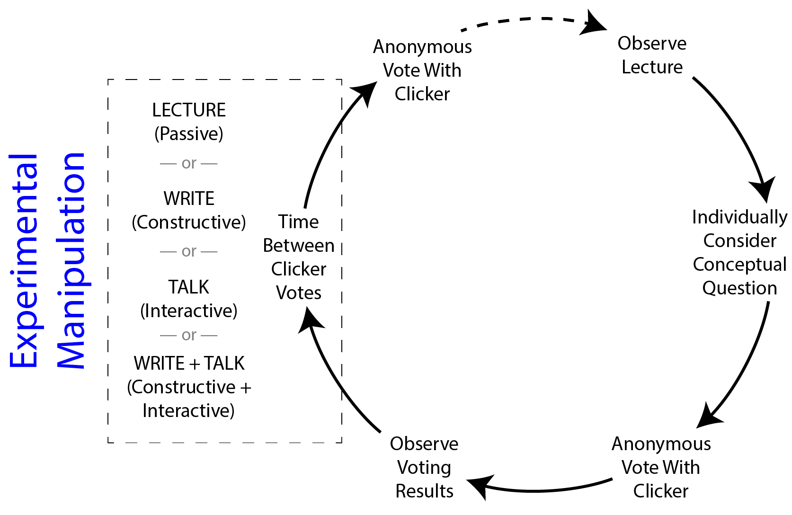

Beyond "active learning
Henderson, J. B. (2019). Harvard Education Review, 4, 611–634.
What it says
- The article reports on a study of variations in how Peer Instruction can be implemented in introductory physics instruction. Specifically, this teaching strategy involves giving students a conceptual physics problem to solve. Student first think about the problem and choose an answer on their own (using a "clicker" system). They then engage in peer discussion before answering the question again. This can, optionally, be repeated until the class comes to consensus.
- In Henderson's study, the same instructor taught four sections of high school physics students with four Peer Instruction variations. The experimental conditions differed solely on the assigned activity during the three minute intervals between answering the clicker question:
- LECTURE — students listen to a supplementary lecture
- WRITE — students spend the time writing about the question
- TALK — students spend the time discussing the question with a partner
- WRITE + TALK — students spend 90 seconds on WRITE followed by 90 seconds on TALK
- This study design was heavily informed by the ICAP Framework, which proposes that the greatest learning occurs when students not only "construct" their own knowledge, as might happen through the writing activity, but are able to interactively co-construct knowledge, as might happen in the talking activity.
- Results show that this is, indeed, the case. Of the three non-lecture conditions, only TALK led to statistically significant gains above the LECTURE condition.
- It also deserves mention that the baseline LECTURE condition in this study still represents an active learning classroom. Peer Instruction in this section, even without the important student dialogues, still led to learning gains that were substantially higher than traditional lecture-only instruction.

Illustration of both the Peer Instruction model used in the study and where the experimental conditions fit into it. As explained above, the four classrooms differed solely in how students spent their time between the first and second clicker responses (Modified from Henderson's Figure 2).
What we might learn from it
- This study has implications for both educators and education researchers.
- From the education research view, Henderson's study provides a particularly careful test of the ICAP Model. It also shows how existing pedagogy can be viewed through the ICAP lens in order to identify research questions, even relating to small portions of the overall curriculum (i.e., the peer instruction activities tested here).
- For educators, this study and ICAP more generally, enable them to make pedagogical decisions in a principled manner. If one option has students working at the Constructive level while a second has students at the Interactive or Active level, then, all else being equal, the instructor can choose the former with confidence that it is likely to be better for students.